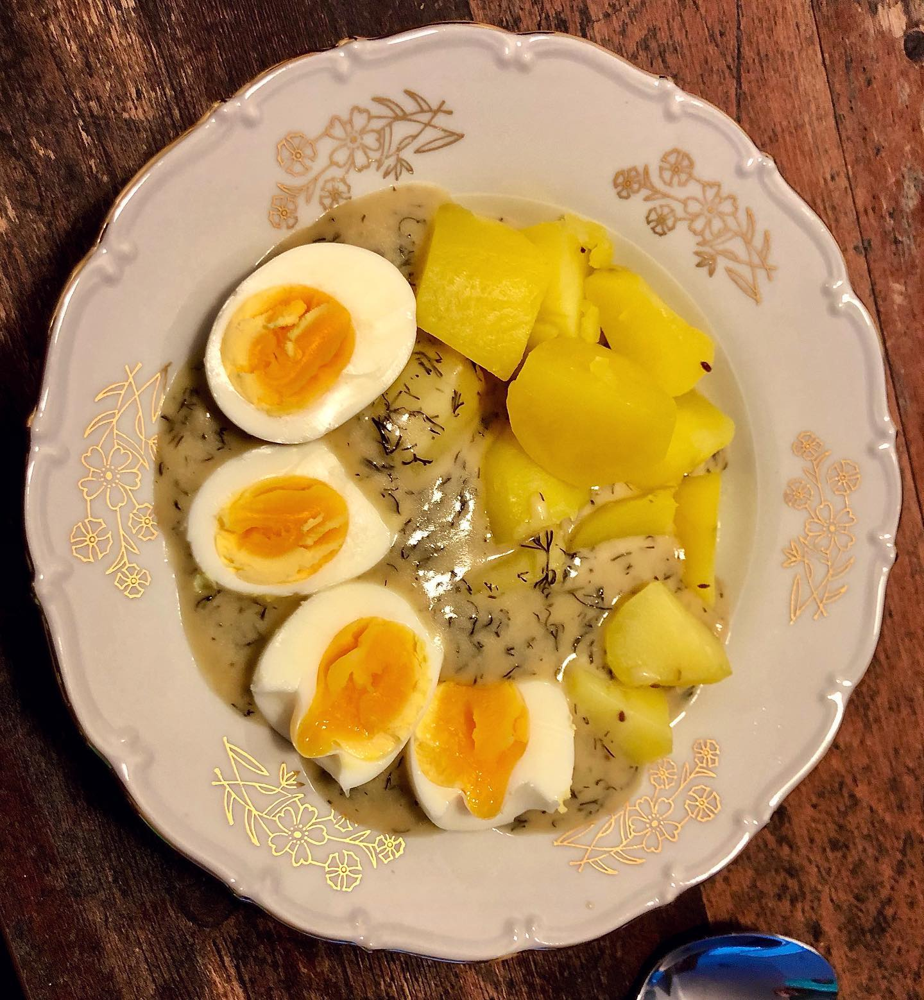

Kôprová omáčka podľa @liska_v_kuchyni — Normy Jedál
Koprovka, někdo ji miluje, jiný ji nenávidí. Doma se naštěstí všichni řadíme do první skupiny. Když jsem včera na farmářských trzích objevila kopr, koupila jsem tam rovnou i vajíčka a brambory a dnešní večeře byla jasná. Mám vyzkoušený recept od @chefkamu, který maximálně doporučuji a naleznete ho u ni ve stories. Tak dobrou chuť. 😋
#koprovka #koprovaomacka #bezlaktozy #lactosefree #farmarsketrhy #stastnavejce #yummy #dnesvarim #domaci #homemade #mnam #food #vecere #jaro #kopr #dill #domacivareni #vege #vegetarian #vegetarianrecipes